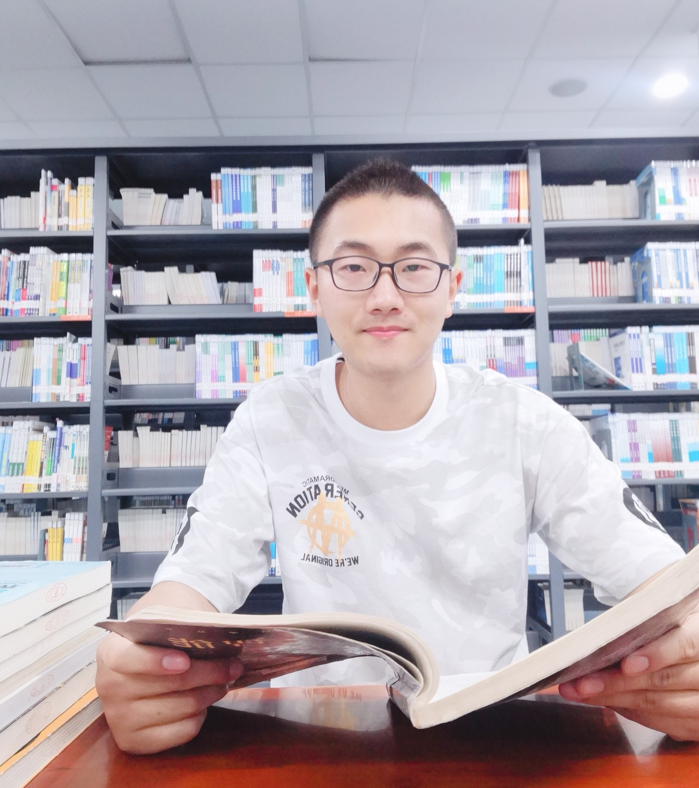

News
30 Nov 2023
One full paper is accepted by ICDE'24 on graph contrastive learning.
20 Oct 2023
One full paper is accepted by WSDM on efficient recommendation.
22 Sep 2023
One full paper is accepted by NeurIPS on graph OOD generalization.
25 Jan 2023
One full paper is accepted by WWW on graph unlearning.
19 May 2022
One full paper is accepted by KDD on graph OOD generalization.
|  |
Yongduo Sui
PhD student
Lab of Data Science 443 Huangshan Road, Hefei, China 230027
Advisor: Xiangnan He and Xiang Wang
Email: syd2019 AT mail.ustc.edu.cn
|
I am currently in the final year of my PhD program at Lab for Data Science, USTC, supervised by Prof. Xiangnan He and Prof. Xiang Wang.
My research interests include Out-of-distribution Generalization, Self-supervised Learning, Causal Inference, and Efficient Machine Learning, particularly in Graph Learning and Recommendation Systems.
Education
| University of Science and Techonology of China (USTC) PhD student in Computer Science Sep 2021 - Now, Hefei Advisor: Prof. Xiangnan He and Prof. Xiang Wang |
| University of Science and Techonology of China (USTC) Master in Department of Electronic Engineering and Information Science Sep 2019 - June 2021, Hefei Advisor: Prof. Bin Li |
| Harbin Engineering University (HEU) Bachelor in Electrical Engineering Sep 2015 - June 2019, Harbin |
Experiences
| Research Intern, Ant Group, Hangzhou, March 2023 - Now Mentor: Jun Zhou, Longfei Li, and Qing Cui |
Publications
 |
Unleashing the Power of Graph Data Augmentation on Covariate Distribution Shift Yongduo Sui, Qitian Wu, Jiancan Wu, Qing Cui, Longfei Li, Jun Zhou, Xiang Wang, Xiangnan He NeurIPS 2023 (Full, Accept rate: 26.1%) [PDF] [Codes] |
|
Causal Attention for Interpretable and Generalizable Graph Classification
Yongduo Sui, Xiang Wang, Jiancan Wu, Min Lin, Xiangnan He, Tat-Seng Chua KDD 2022 (Full Research, Accept Rate: 15.0%) [PDF] [Codes] |
|
A Unified Lottery Ticket Hypothesis for Graph Neural Networks
Tianlong Chen*, Yongduo Sui*, Xuxi Chen, Aston Zhang, Zhangyang Wang ICML 2021 (Accept rate: 21.5%, *Co-first author) [PDF] [Codes] |
|
Inductive Lottery Ticket Learning for Graph Neural Networks
Yongduo Sui, Xiang Wang, Tianlong Chen, Meng Wang, Xiangnan He, Tat-Seng Chua JCST 2023 (Journal of Computer Science and Technology) [PDF] [Codes] |
|
Towards Robust Detection and Segmentation Using Vertical and Horizontal Adversarial Training
Yongduo Sui, Tianlong Chen, Pengfei Xia, Shuyao Wang, Bin Li IJCNN 2022 (Oral Presentation) [PDF] |
|
Masked Graph Modeling with Multi-View Contrast Yanchen Luo, Sihang Li, Yongduo Sui, Junkang Wu, Jiancan Wu, Xiang Wang, Xiangnan He ICDE 2024 (Full) |
|
Dynamic Sparse Learning: A Novel Paradigm for Efficient Recommendation Shuyao Wang, Yongduo Sui, Jiancan Wu, Zhi Zheng, Hui Xiong WSDM 2024 (Full, Accept rate: 18%) |
|
GIF: A General Graph Unlearning Strategy via Influence Function Jiancan Wu, Yi Yang, Yuchun Qian, Yongduo Sui, Xiang Wang, Xiangnan He WWW 2023 (Full, Accept rate: 19.2%) |
|
Exploring Lottery Ticket Hypothesis in Media Recommender Systems
Yanfang Wang, Yongduo Sui, Xiang Wang, Zhenguang Liu, Xiangnan He IJIS 2022 (International Journal of Intelligent Systems) |
|
Gans Can Play Lottery Tickets Too
Xuxi Chen, Zhenyu Zhang, Yongduo Sui, Tianlong Chen ICLR 2021 (Accept rate: 28.7%) |
|
Graph Contrastive Learning with Augmentations
Yuning You, Tianlong Chen, Yongduo Sui, Ting Chen, Zhangyang Wang, Yang Shen NeurIPS 2020 (Accept rate: 20.1%) |
Reviewer of Conferences and Journals
|
2024: ICLR, ICML, WWW, AAAI, AI, TNNLS 2023: ICLR, ICML, NeurIPS, WWW, KDD, SIGIR, TOIS, TKDE, TNNLS 2022: ICLR, ICML, NeurIPS, WWW, TOIS, TKDE 2021: NeurIPS |
Honors & Awards
|
NeurIPS Scholar Award , 2023.11 |
|
National Scholarship (PhD) , 2023.12 - University of Science and Technology of China |
|
Longhu Scholarship, 2022.12 - University of Science and Technology of China |
|
National Scholarship (Undergraduate) , 2018.12 - Harbin Engineering University |
|
National Scholarship (Undergraduate) , 2017.12 - Harbin Engineering University |
|
National Scholarship (Undergraduate) , 2016.12 - Harbin Engineering University |
|
Outstanding Graduates , 2019 - Harbin Engineering University |
|
"Study Star" on the Graduation Gold List , 2019 - Harbin Engineering University (Only One in the Entire School) |
|
First-class Scholarship , 2016,2017,2018,2019 - Harbin Engineering University |
|
Heilongjiang Province Outstanding Student , 2018 - Heilongjiang Province (< 1%) |
|
School-level Study Role Model , 2017 - Harbin Engineering University (< 0.1%) |
Talks
|
Unleashing the Power of Graph Data Augmentation on Covariate Distribution Shift, 2023.11 - AI Time |
|
Graph and Causality , 2023.10 - DataFun Causal Inference Summit |
|
Graph Out-of-Distribution Generalization , 2023.03 - Ant Group |

Last update: 23 Dec, 2023. Webpage template borrows from Prof. Xiangnan He.